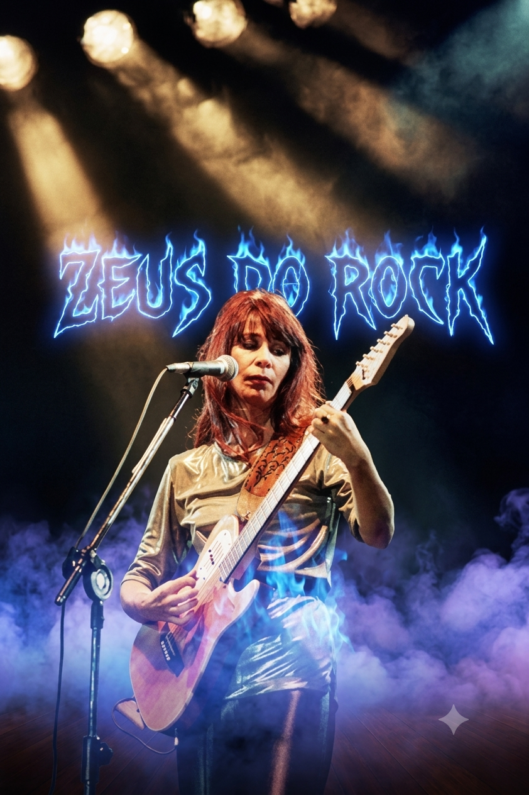

Rita Lee
A rainha incontestável do rock brasileiro. Rebelde, genial e dona de hits que moldaram a nossa cultura musical de forma definitiva.
Ver Mito Completo →
⚡ Origem e Juventude: Nascida em São Paulo (SP) em 31 de dezembro de 1947, cresceu no bairro da Vila Mariana e desde cedo mostrou intimidade com as artes e o piano.
⚡ Passagem Celestial: Faleceu aos 75 anos, em 8 de maio de 2023, em São Paulo, após lutar bravamente contra um câncer de pulmão conhecido em 2021.
⚡ Família: Teve três filhos (Beto, João e Antônio) com o músico Roberto de Carvalho, seu parceiro de vida e de composições por mais de 40 anos.
⚡ Conquistas e Importância: Foi a mulher que mais vendeu discos no Brasil. Quebrou barreiras nos anos 60 com Os Mutantes e depois com a banda Tutti Frutti. Ganhou o Prêmio de Excelência Musical do Grammy Latino.
⚡ Impacto na Música: Libertou o comportamento feminino na música brasileira, cantando sobre prazer, política e ironia em plena ditadura militar. Tornou o rock acessível e incrivelmente pop.
⚡ Turnês Marcantes: A lendária turnê do álbum Fruto Proibido (1975) e o estrondoso sucesso nacional e internacional do show Acústico MTV (1998).
⚡ Histórias de Bastidores: Durante a ditadura, foi presa grávida. A cantora Elis Regina foi até o quartel e ameaçou quebrar o lugar se não chamassem um médico para Rita. Outra curiosidade é que Rita era tão apaixonada por animais que "sequestrou" um rato de laboratório para salvá-lo e o batizou de Belchior.